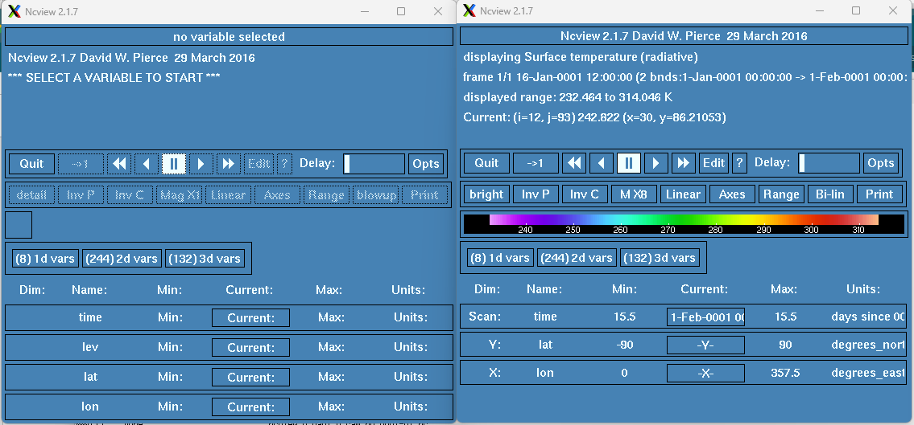
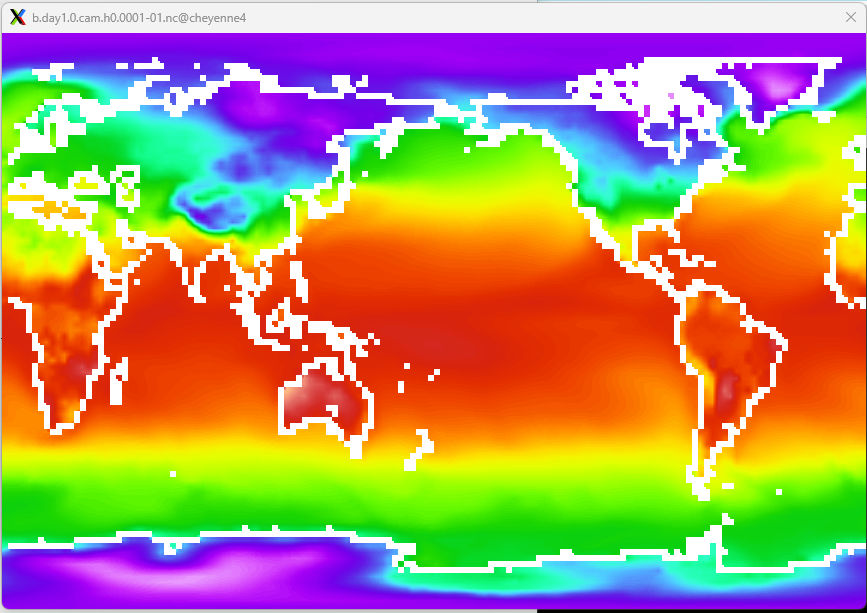
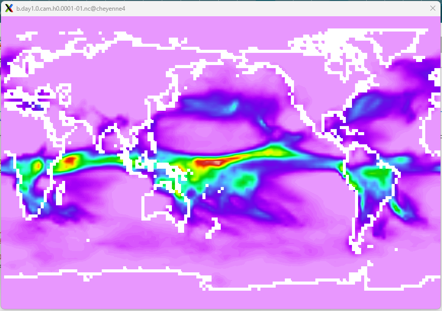
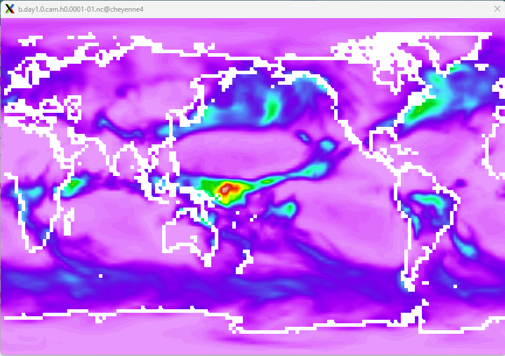

Exercise 2.3 Examine History Files
Contents
Exercise 2.3 Examine History Files#
Having successfully completed your first month of the new CESM B1850 case you will now examine the history files that have been transfered to the Archive directory. You will be using the NetCDF viewer ncview to look at the monthly average values for the single month. For this exercise you will be looking at the output from the Community Atmospheric Model (CAM) component of CESM, however the ncview tool can be applied to other components such as the Community Land Model (CLM). In this exercise we will:
Step 1. Explore the b.day1.0 Archive directory.
Step 2. Open the b.day1.0 cam h0 in ncview.
Step 3. Examine Average Monthly Surface Temperature.
Step 4. Examine Average Monthly Precipitation.
Figure: Directories of the CESM2 Workspace Paths 
Step 1. Explore the b.day1.0 Archive directory#
From the previous exercise you can see the Archive directory has a range of model component directories along with the restart (rest) and logs directories. First change directory into the Archive directory and then list the contents of the restart and logs directories.
cd /glade/scratch/$USER/archive/b.day1.0
Exercise: List the logs directory:
ls -l logs
This is where all the log files from the model run are kept.
Exercise: List the logs directory:
ls -l rest/0001-02-01-00000
These are the files that CESM will use to restart the model in the next exercise.
Step 2. Open the CAM h0 monthly history file#
You will now use the NetCDF viewer ncview to look at the b.day1.0 case CAM monthly average values for the single month your ran.
cd atm/hist
Exercise: List the logs directory:
ls -l
There should be a single file b.day1.0.cam.h0.0001-01.nc.
Exercise: Load the module ncview:
module load ncview
Cheyenne uses modules to provide all of the environment required to run certain applications. Without the module load Cheyenne does not know about ncview.
Exercise: Load the module ncview:
ncview b.day1.0.cam.h0.0001-01.nc &
If your X11 environment is correctly set up then the ncview tool should appear as shown below on the left. Note the ‘ &’ at the end of the command. This puts the command into the background allowing other tasks to be run from the Cheyenne terminal window. The view on the right shows the ncview application once the Surface Temperature variable has been selected.

Figure: NCView App Window
Step 3. Examine Average Monthly Surface Temperature#
Using ncview with the b.day1.0 January 0001 CAM monthly average values file loaded examine the Surface Temperature variable. Update the color palette used to plot values and change the size of the plot.
Click on the “(244) 2d vars” button shown above. This will pull up a list of all 2d vars on the b.day1.0 January 0001 CAM history file. This is a long list but it is in alphabetical order. You are looking for the TS variable.
Exercise: Change the color selection from detail to bright:
Click on the color button marked with “detail”. This will change the color selection to “3gauss”. Clicking again will change this to “ssec” and finally “bright”.
Exercise: Increase the map plot size:
Click on the magnify button marked with “M X3”. This will change the magnification to “M X4”. Clicking again will change this to “M X5” and finally “M X6”

Figure: NCView b.day1.0 TS Jan 0001
The Surface Temperature variable is in Kelvin. A value of 273.15K represents 0C and 32F. There are many options to better view and explore data with ncview. Some of these will come up over the next few days of the tutorial.
Step 4. Examine Average Monthly Precipitation#
Using ncview with the b.day1.0 January 0001 CAM monthly average values file loaded examine the the two variables representing Convective Precipitation and Large Scale Precipitation.
Click on the “(244) 2d vars” button shown above. Find and select the PRECC variable.

Figure: NCView b.day1.0 PRECC Jan 0001
Click on the “(244) 2d vars” button shown above. Find and select the PRECL variable.

Figure: NCView b.day1.0 PRECL Jan 0001
Precipitation in the model is recorded in m/s. To convert to mm/day we can multiply the values by a 1000 mm in a meter and 86,400 seconds in a day. Can you see the differences in Convective and Large Scale Precipitation?